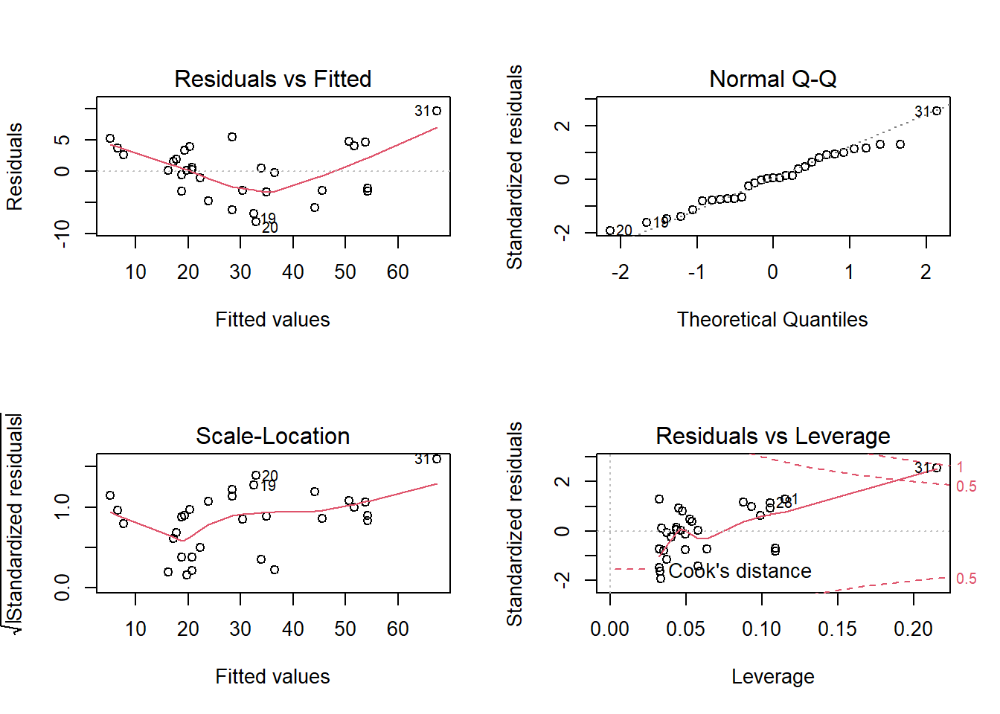
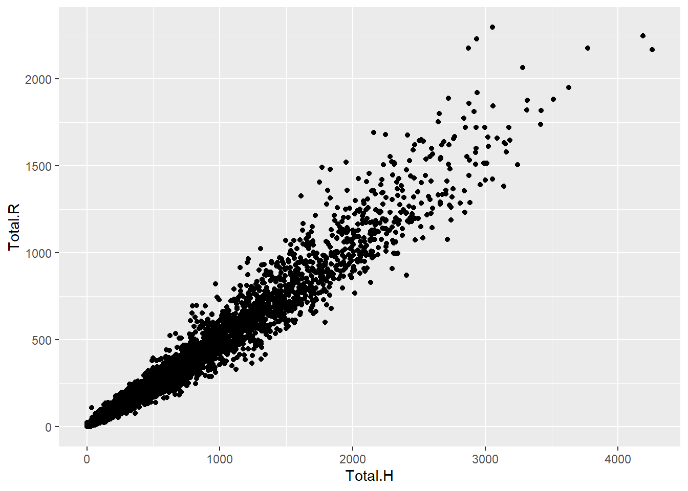

Module 1.1
Getting started: working with objects
TWS-WS 2022
NOTE: this module borrows heavily from an R short course developed by a team at Colorado State University. - Thanks to Perry Williams for allowing us to use these materials!!
Welcome to the 2021 R bootcamp! Let’s get started!!
Get materials for this module
- I recommend having a printed copy of a good base R “cheatsheet” (or two) as you get started. You will be introduced to a lot of new material very quickly in this workshop, and you are not expected to remember everything! ‘Cheatsheets’ like this can quickly and easily refresh your memory. So print out the cheatsheet and don’t worry if you don’t memorize everything we do together in this workshop- the key is that you leave this workshop knowing what can be done in R (just about everything!), to feel comfortable doing some basic data operations in R, and most importantly, we hope the workshop gives you confidence to learn and try new things in R!
Here are links to good base R “cheatsheets”:
Load script for module #1.1
Click here to download the script for this module! I recommend right-clicking (or control-clicking for Macs) on the link and selecting the “Save As” option from the context menu. Save the script to a convenient folder on your laptop (e.g., a folder called “RBootcamp2022”), which will serve as your working directory for this bootcamp.
Start a new RStudio Project. To do this, open RStudio and from the File menu select File>>New Project. In the menu that follows, select “Existing Directory”, and then navigate to the folder in which you saved the R script for this module (your working directory). Select this folder to be your project directory. Every time you open this project (File >> Open Project), this project directory will be the first place that R looks for data files and code, and will be the default location for saving data and code.
Load a blank script in RStudio. To do this, click on the “blank paper” icon at the far left of the RStudio toolbar (or File >> New File >> R script). Your RStudio interface should now be divided into four quadrants. In the RStudio default configuration, the top left panel is your script (a set of written commands that R can recognize and execute), the bottom left panel is your console (your direct connection with R), the top right panel is your environment (displays all the objects – data sets, variables, functions– that you have defined in your current R session), and the bottom right panel is a set of tabbed interfaces that let you view help files, load packages, view plots, view files in your working directory, etc.
Take a couple minutes to familiarize yourself with the RStudio environment.
Let’s get started!

Explore the R console
The R console is located in the left half or bottom left of the RStudio interface (see figure above).
The R console (what you see if you opened R directly instead of RStudio) is a command line interface, and is your direct connection with R: you give R a command at the prompt and R executes that command.
You generally shouldn’t work in the console, at least for writing important code- use an R script instead (see below).
However, let’s take a few minutes to work with the console:
Click on the console, just to the right of one of the “>” prompts.
You can use the console like a calculator. For example, type
6+11at the prompt and hit enter.Now hit the “up” arrow. The R console remembers all previous commands that it has executed in this session, which allows you to re-run commands relatively easily.
Any command that is preceded by a pound sign (#) is ignored by the R console. Try typing
# 2+2and hitting “Enter”. Nothing happens, right? We will come back to this shortly.
Let’s create our first object
Objects are defined using R’s assignment operator (Windows shortcut: Alt + -)(Mac: replace Alt with Option), which looks like a left arrow (<-). Type the following statement directly into the console:
myname <- 'Alfred' Then hit “Enter”. What does R return?
NOTHING!
BUT…. check the Environment window (top right of RStudio interface- list of all the objects you’ve defined in this session). You should see that you now have a new object in your environment, called “myname”, and this object contains a text string (“Alfred”).
Now type myname into the R console and hit “Enter”. What happens?
If you enter the name of an object at the command line, R automatically prints the value of the object!
NOTE: RStudio has a useful autofill feature, which can save you lots of time and headaches. After you’ve typed the first couple letters (e.g., “my”), RStudio will suggest “myname” and you can just hit “Enter” to complete the object name! The auto-type feature, unlike R, is not case sensitive! Also note that you can hit the ‘tab’ key to trigger autofill anytime after you start typing in RStudio.
Graduating to R Scripts
You will quickly realize that although the command-line R console is nice to use for some things (e.g., quick things that don’t need to be saved), there is a much better way to develop R code. That is by storing a sequential set of commands as a text file. This text file (the standard is to use the “.R” extension) is called an R script.
New script
If you haven’t done it already, create a new R script by clicking on the “blank paper” icon at the far left of the RStudio toolbar (or File>>New File>>R script). The top left quadrant of the RStudio interface (at least by default) should now contain a blank R script.
In your blank script, let’s define a new object. For example:
my_obj <- 6+11
Now place the cursor somewhere within the line of text you just wrote and hit ‘Ctrl+Enter’ (or ‘Command+Enter’) to run that line of code! You should see a new object (‘my_obj’) pop up in your environment.1.
In the next line of your script, enter a pound sign (hashtag) followed by the command 2+2. Nothing happens, right?
Now delete the hashtag and try again. Now R recognizes and runs the command. Interesting…
Take a few minutes to get comfortable running commands and defining new objects using your new R script.
Of course, it’s always a good idea to save your scripts often – so feel free to save your new script before you move on.
Load an Existing script
Remember the file you downloaded at the beginning of this submodule? That file is an R script- Let’s load it up now!
To do this, click on the “folder” icon on the Rstudio toolbar (or File >> Open File) and choose the script you downloaded earlier.
The first few lines of the script for this module are preceded by pound signs. As you have already seen, R ignores these lines (anything preceded by a pound sign is ignored)- they are called comments, and they help to keep code organized and understandable.
use comments early and often- they are tremendously valuable.
Now you know the basics of how to use R scripts! Now, let’s keep working through the remainder of the script you just opened.
A quick R demo
Before we get into the basics, let’s just run through some of what R can do! Don’t worry if you don’t understand something- we will go over all of this in greater detail later!
To get started quickly, we will first load a data set that is built into R!
###############
# R DEMO:
###############
# don't worry if you don't understand this just yet- this is just a taste of where we are going!
#########
# load a built-in dataset
data(trees)Next, we can examine the data object in r. Again, we will get into this in much more detail later!
#########
# explore the data object
summary(trees) # summary statistics for all variables in data frame## Girth Height Volume
## Min. : 8.30 Min. :63 Min. :10.20
## 1st Qu.:11.05 1st Qu.:72 1st Qu.:19.40
## Median :12.90 Median :76 Median :24.20
## Mean :13.25 Mean :76 Mean :30.17
## 3rd Qu.:15.25 3rd Qu.:80 3rd Qu.:37.30
## Max. :20.60 Max. :87 Max. :77.00str(trees) # summary of the data structure## 'data.frame': 31 obs. of 3 variables:
## $ Girth : num 8.3 8.6 8.8 10.5 10.7 10.8 11 11 11.1 11.2 ...
## $ Height: num 70 65 63 72 81 83 66 75 80 75 ...
## $ Volume: num 10.3 10.3 10.2 16.4 18.8 19.7 15.6 18.2 22.6 19.9 ...Now let’s visualize the data and start to get a sense for what patterns we can detect.
#########
# visualize the data
# histograms:
layout(matrix(1:3,nrow=1,byrow = T)) # set up a multi-panel graphics device (three plots side by side)
hist(trees$Height) # visualize the distribution of height data
hist(trees$Girth) # visualize the distribution of girth data
hist(trees$Volume) # visualize the distribution of volume data
# bivariate scatterplots:
layout(matrix(1:2,nrow=1,byrow = T)) # set graphics device with 2 plots side by side
plot(trees$Volume~trees$Girth) # scatterplot of volume against girth
plot(trees$Volume~trees$Height) # scatterplot of volume against height
pairs(trees) # plots all scatterplots together as a scatterplot matrix!
Now we can perform some basic statistics, like a linear regression analysis for example:
##########
# perform linear regression analysis
model1 <- lm(Volume~Girth,data=trees) # regress Volume on Girth
summary(model1) # examine the results##
## Call:
## lm(formula = Volume ~ Girth, data = trees)
##
## Residuals:
## Min 1Q Median 3Q Max
## -8.065 -3.107 0.152 3.495 9.587
##
## Coefficients:
## Estimate Std. Error t value Pr(>|t|)
## (Intercept) -36.9435 3.3651 -10.98 7.62e-12 ***
## Girth 5.0659 0.2474 20.48 < 2e-16 ***
## ---
## Signif. codes: 0 '***' 0.001 '**' 0.01 '*' 0.05 '.' 0.1 ' ' 1
##
## Residual standard error: 4.252 on 29 degrees of freedom
## Multiple R-squared: 0.9353, Adjusted R-squared: 0.9331
## F-statistic: 419.4 on 1 and 29 DF, p-value: < 2.2e-16Then we can perform some diagnostic tests to make sure the data meet the assumptions of the analysis:
######
# test key assumptions visually
layout(matrix(1:4,nrow=2,byrow=T)) # set up graphics window
plot(model1) # run diagnostic plots for our regression
And finally, let’s visualize the results:
#########
# visualize the results!
xvals <- seq(5,30,0.5) # set the range of "Girth" values over which you want to make predictions about "Volume"
pred <- predict(model1,newdata=data.frame(Girth=xvals),interval = "confidence",level = 0.99) # use the linear model to make predictions about "Volume"
plot(trees$Volume~trees$Girth,xlab="Girth (inches)",ylab="Volume (cubic feet)",main="Black Cherry",
xlim=range(xvals),ylim=c(0,100)) # Make a pretty scatterplot
abline(model1,lwd=2,col="brown") # Add the regression line
lines(xvals,pred[,"upr"],col="brown",lty=2) # Add the upper bound of the confidence interval
lines(xvals,pred[,"lwr"],col="brown",lty=2) # ... and the lower bound
text(10,80,sprintf("Volume = %s + %s*Girth",round(coefficients(model1)[1],1),round(coefficients(model1)[2],1))) # Add the regression coefficients
text(10,65,sprintf("p = %s",round(summary(model1)$coefficients[,"Pr(>|t|)"][2],3))) # Add the p-value
Workspace management
The workspace (environment) in R can become cluttered as we create variables and assignments in R. As we work through the modules in this workshop it will be helpful to clear the environment every once in a while. Earlier we assigned the value “Alfred” to the variable myname. Let’s remove that from the environment. There are several ways to do this.
- In the ‘environment’ panel in RStudio (upper right quadrant) there is a little broom. If you click that it will clear the entire environment.
- Use
rm(myname)to clear just themynamevariable. - Use this handy one-liner
rm(list=ls())to clear the entire environment.
Back to basics! R Objects
R has many different kinds of objects that you can define and store in memory.
Objects that enable storage of information (data objects) include: vectors, matrices, lists, and data frames.
Objects that transform data and perform statistics/visualizations etc. on data objects are called functions.
Functions
Functions are routines that take inputs (usually data objects) (also called arguments) and produce something in return (summaries, plots, tables, statistics, files). In R, the name of the function is followed by parentheses, and any arguments are entered inside the parentheses. The basic syntax looks like the code snippet below.

## function syntax
functionName([enter arguments here])If you don’t type the parenthesis, the function is not run- instead, the function definition is shown.
Here are some examples:
#############
### functions
#############
sum(1, 2, 3, 10) # returns: 15
c(1, 2, 3, 10) # combine four numbers into a single data object (a vector!)
floor(67.8) # removes the decimal component of a number
round(67.8) # rounds a number
round # oops, we forgot to add parenthesis!
help(round) # a function for getting help with functions!!## starting httpd help server ... done?round # shortcut for the 'help' functionWe will revisit functions in more detail (and build our own functions) in the “Programming” submodule.
Basic mathematical operations
Some very basic functions in R have ‘shorthands’ that make R behave like a fancy calculator. Here are some basic mathematical operations you can do in R:
########
# basic mathematical operations
2+3 # addition
'+'(2,3) # see, this is really a function in disguise!
6-10 # subtraction
2.5*33 # multiplication
4/5 # division
2^3 # exponentiation
sqrt(9) # square root
8^(1/3) # cube root
exp(3) # antilog
log(20.08554) # natural logarithm (but it's possible to change the base)
log10(147.9108) # common logarithm
log(147.9108, base=10)
factorial(5) # factorialData objects and variables
Data types
The basic data types in R are:
- “numeric” (numbers)
- “character” (text strings)
- “logical” (TRUE/FALSE)
- “factor” (categorical)
Scalars
Scalars are the simplest data objects. A scalar is just a single value. Scalars can be a single value of any data type.
##################
#### Create R Objects
##################
#############
### scalars
#############
scalar1 <- 'this is a scalar'
scalar2 <- 104
scalar3 <- 5 + 6.5 # evaluates to the single value 11.5
scalar4 <- '4'Scalars can store information of any type: numeric, character, logical, or factor. In the example above, scalar1 is a character, scalar2 and scalar3 are both numeric. What is the data type for scalar4?
If you’re uncertain about the type of any R object the R function 2 typeof() will come in handy.
typeof(scalar4) # returns: character
## what is this type?
scalar5 <- TRUE
typeof(scalar5) # returns: logicalWhat happens when we try and add scalar2 and scalar4? Think about the types of each scalar. Run the code below to find out.
## what happens when we run this line of code? Think about the types.
scalar2 + scalar4This operation is not possible, and R gives you an error. Remember that scalar4 is a character, and it doesn’t make sense to perform mathematical operations on character strings.
Vectors
Vectors combine multiple scalars in a single object.
First let’s create some vectors. In the code below we use a function called c(). You can think of it as the ‘combine’ function. It takes several objects, and combines them together into a vector. We can even use c() to combine scalar (or vector) objects, like below.
#############
### VECTORS
#############
vector1 <- c(1.1, 2.1, 3.1, 4) # the "c()" function combines smaller data objects into a larger object
vector2 <- c('a', 'b', 'c')
vector3 <- c(TRUE, 'a', 1)There are many different ways to create a vector. You’ll learn more about that later. Check out the vectors you just created. Each vector is composed of one or more scalar elements.
What happened with vector2 and vector4? Looking at the script, these vectors appear to contain a mix of numeric and character elements, but the resulting vector is all characters! This is because all elements of a vector must be the same type. Therefore, R will attempt to convert (coerce) all vector elements to a single type.
In the following code, we create a vector myvec from three existing data objects: a (1 element), b (1 element), and c (2 element vector):
a <- 1
b <- 2
c <- c(3,4)
myvec <- c(a, b, c) # create a vector from existing data objects
myvec## [1] 1 2 3 4Now let’s do some stuff with vectors!
length(myvec) # the "length()" function returns the number of elements in a vector
d1 <- myvec # copy the vector "myvec"
d2 <- myvec+3 # add 3 to all elements of the vector "myvec"
d3 <- d1+d2 # elementwise addition
d4 <- d1+c(1,2) # what does this do?
## inspect the objects by calling them in the console (or script window)
d1 # returns: 1 2 3
d2 # returns: 4 5 6
d3 # returns: 5 7 9
d4 # returns: 2 4 4NOTE: the last command we ran, “d1+c(1,2)”, produced a warning message. Remember to take warning messages seriously- a warning message means “the command ran but the results might not make sense”! In this case, the warning was that we tried to add two vectors of different length. R’s default is to repeat (recycle) the shorter vector until it matches the length of the longer vector.
NOTE: strictly speaking, there are no true scalars in R- scalars are just vectors with 1 element!
Matrices
Matrix data objects have two dimensions: rows and columns. You can think of matrices as a bunch of vectors grouped together, either by row or by column! All of the elements in a matrix must be of the same length and the same type (if different types are provided R will attempt to coerce the elements into a common type).
Let’s make our first matrix. One simple way to make a matrix is just by joining two vectors using the function cbind() (bind vectors or matrices together by column) or rbind() (bind vectors or matrices together by row)
#############
### MATRICES
#############
mymat <- cbind(d1,d2) # create a matrix by binding vectors, with vector d1 as column 1 and d2 as column 2
mymat## d1 d2
## [1,] 1 4
## [2,] 2 5
## [3,] 3 6
## [4,] 4 7class(mymat) # confirm that the new object "mymat" is a matrix using the 'class()' function## [1] "matrix" "array"And there are other ways to make a matrix in R. For instance, we can use the function “matrix()” (this is a function for matrix construction!):
mymat <- matrix(c(1,2,3,4,5,6),nrow=3,ncol=2) # create matrix another way (stack columns together)
mymat## [,1] [,2]
## [1,] 1 4
## [2,] 2 5
## [3,] 3 6mymat <- matrix(c(1,2,3,4,5,6),nrow=3,ncol=2,byrow=T) # create matrix another way (stack rows together)
mymat## [,1] [,2]
## [1,] 1 2
## [2,] 3 4
## [3,] 5 6mymat <- rbind(c(1,4),c(2,5),c(3,6)) # create matrix another way (stacking three vectors on top of one another)
mymat## [,1] [,2]
## [1,] 1 4
## [2,] 2 5
## [3,] 3 6We can do math with matrices too:
# math with matrices
mymat + 2## [,1] [,2]
## [1,] 3 6
## [2,] 4 7
## [3,] 5 8mymat/sum(mymat)## [,1] [,2]
## [1,] 0.04761905 0.1904762
## [2,] 0.09523810 0.2380952
## [3,] 0.14285714 0.2857143Lists
List objects are far more general than matrices. List objects are just a bunch of potentially unrelated data objects (list elements) grouped together into a single object! The elements of a list don’t need to be the same length or the same type. The elements of a list can be vectors, matrices, functions, or other lists - they could be literally any R object.
Let’s make our first list:
#############
### LISTS
#############
mylist <- list() # create empty list
mylist[[1]] <- c(1,2,3) # note the double brackets- this is one way to reference list elements.
mylist[[2]] <- c(4,5)
mylist[[3]] <- "Alfred"
mylist## [[1]]
## [1] 1 2 3
##
## [[2]]
## [1] 4 5
##
## [[3]]
## [1] "Alfred"Data frames (a special kind of list)
Data frame objects are a special type of list in which list element is a vector object. Importantly, in a data frame, each of the component vectors must have the same number of vector elements. Each vector object in a data frame is also known as a column. The row of a data frame refers to the ith element of each of the vectors.
Data frames superficially resemble matrices, since both types of objects have two dimensions: rows and columns. However, data frames are really much more general than matrices; in data frames, unlike matrices, the columns of a data frame can represent different types (i.e., character, logical, numeric, factor), and can thereby code for very different types of information!
Data frames are the basic data storage structure in R. You can think of a data frame like a spreadsheet. Each row of the the data frame represents a different observation, and each column represents a different measurement taken on that observation unit.
Let’s make our first data frame. We will use the data frame constructor function “data.frame()”.
#############
### DATA FRAMES
#############
mydf <- data.frame(col1=c(1,2,3),colW2=c(4,5,6)) # create a ‘data frame’ with two columns. Each column is a vector of length 3
mydf## col1 colW2
## 1 1 4
## 2 2 5
## 3 3 6Now we have a data frame with three observation units and two measurements (variables).
We can use the “names()” function to see the names of column of a data frame- or to change these names!
names(mydf) # view or change column names## [1] "col1" "colW2"names(mydf)=c("meas_1","meas_2") # provide new names for columns
mydf## meas_1 meas_2
## 1 1 4
## 2 2 5
## 3 3 6And we can view or change the row names of a data frame (or matrix) using the “rownames()” function:
rownames(mydf) <- c("obs1","obs2","obs3")
mydf## meas_1 meas_2
## obs1 1 4
## obs2 2 5
## obs3 3 6Making up data!
In this section, we will make a bunch of fake data objects. In the next submodule we’ll practice working with real data!
Generating sequences of numbers
One task that comes up a lot is generating sequences of numbers. We certainly don’t want to do this entirely by hand! Here are some shortcuts:
#############
### MAKING UP DATA!
#############
#######
# Generating vector sequences
1:10 # sequential vector from 1 to 10## [1] 1 2 3 4 5 6 7 8 9 1010:1 # reverse the order## [1] 10 9 8 7 6 5 4 3 2 1seq(from=1,to=10,by=1) # equivalent to 1:10## [1] 1 2 3 4 5 6 7 8 9 10seq(10,1,-1) # equivalent to 10:1## [1] 10 9 8 7 6 5 4 3 2 1seq(1,10,length=10) # equivalent to 1:10## [1] 1 2 3 4 5 6 7 8 9 10seq(0,1,length=5) # sequence of length 10 between 0 and 1 ## [1] 0.00 0.25 0.50 0.75 1.00Another task is to group regular recurring sequences together:
##############
# Repeating vector sequences
rep(0,times=3) # repeat 0 three times## [1] 0 0 0rep(1:3,times=2) # repeat 1:3 two times## [1] 1 2 3 1 2 3rep(1:3,each=2) # repeat each element of 1:3 two times## [1] 1 1 2 2 3 3And finally, we can fill up a vector with random numbers using one of R’s built in random number generators:
###########
# Random numbers
z <- rnorm(10) # 10 realizations from std. normal
z## [1] 1.5842377 -1.9739585 1.9332170 -0.6675939 1.4679905 -1.5721204
## [7] 0.4938669 0.6293144 1.7213247 -1.2847513y <- rnorm(10,mean=-2,sd=4) # 10 realizations from N(-2,4^2)
y## [1] -0.9241116 -10.0720383 -1.5519015 2.3482578 2.0055480 -3.7199467
## [7] 3.7363330 -2.8731987 -4.0679452 -1.4994881rbinom(5,size=3,prob=.5) # 5 realizations from Binom(3,0.5)## [1] 1 2 3 1 1rbinom(5,3,.1) # 5 realizations from Binom(3,0.1)## [1] 1 0 1 0 2runif(10) # 10 standard uniform random numbers## [1] 0.55608035 0.61793222 0.97079408 0.79179905 0.05590036 0.34063252
## [7] 0.46401301 0.70279527 0.49805349 0.01960336runif(10,min=-1,max=1) # 10 uniform random variates on [-1,1]## [1] -0.4964405 -0.8478536 -0.5315513 0.3657844 -0.4553727 -0.5943069
## [7] 0.3748283 0.2093847 0.1336085 0.4872494And finally, we can make up a fake data frame using some of the tricks we just learned!
############
# Make up an entire fake data frame!
my.data <- data.frame(
Obs.Id = 1:100,
Treatment = rep(c("A","B","C","D","E"),each=20),
Block = rep(1:20,times=5),
Germination = rpois(100,lambda=rep(c(1,5,4,7,1),each=20)), # random poisson variable
AvgHeight = rnorm(100,mean=rep(c(10,30,31,25,35,7),each=20))
)
head(my.data)## Obs.Id Treatment Block Germination AvgHeight
## 1 1 A 1 0 9.907695
## 2 2 A 2 1 8.415369
## 3 3 A 3 4 9.722224
## 4 4 A 4 1 12.817606
## 5 5 A 5 0 10.470249
## 6 6 A 6 2 9.845489summary(my.data) # Use the "summary()" function to summarize each column in the data frame.## Obs.Id Treatment Block Germination
## Min. : 1.00 Length:100 Min. : 1.00 Min. :0.00
## 1st Qu.: 25.75 Class :character 1st Qu.: 5.75 1st Qu.:1.00
## Median : 50.50 Mode :character Median :10.50 Median :3.00
## Mean : 50.50 Mean :10.50 Mean :3.38
## 3rd Qu.: 75.25 3rd Qu.:15.25 3rd Qu.:6.00
## Max. :100.00 Max. :20.00 Max. :9.00
## AvgHeight
## Min. : 8.415
## 1st Qu.:24.552
## Median :30.001
## Mean :26.288
## 3rd Qu.:32.002
## Max. :35.914NOTE: the “head()” function displays only the first few rows of a data frame, making it easier to look at. Displaying all 100 rows is a little distracting, and never mind if you had thousands of observations!
Accessing, indexing and subsetting data
In any data analysis project, we will need to manage, manipulate and process your data objects. To do this, we need to be able to access elements and subsets of our data objects.
To access a particular element of a vector, we just enclose the element(s) we want in brackets:
############
### Accessing, indexing and subsetting data
############
# X[i] access the ith element of vector X
myvec <- 2:10
myvec## [1] 2 3 4 5 6 7 8 9 10myvec[3]## [1] 4myvec[c(1,5)]## [1] 2 6myvec[-3]## [1] 2 3 5 6 7 8 9 10It is even more intuitive to access elements of a named vector:
myvec <- 1:4
names(myvec) <- c("fred","sally","mimi","terrence")
myvec## fred sally mimi terrence
## 1 2 3 4myvec["terrence"]## terrence
## 4myvec[c("sally","fred")]## sally fred
## 2 1For matrices, we need to specify rows AND columns!
# X[a,b] access row a, column b element of matrix/data frame X
# X[,b] access all rows of column b of matrix/data frame X
# X[a,] access row a of matrix/data frame X
d <- matrix(1:6,nrow=3,ncol=2)
d## [,1] [,2]
## [1,] 1 4
## [2,] 2 5
## [3,] 3 6d[,2] # 2nd column of d## [1] 4 5 6d[2,] # 2nd row of d## [1] 2 5d[2:3,] # 2nd and 3rd rows of d in a matrix## [,1] [,2]
## [1,] 2 5
## [2,] 3 6Subsetting works much the same for lists and data frames. However, now we can reference data frame columns (variables) and other list elements using the dollar sign or double-bracket operator:
# $ access component of an object (data frame or list)
# Z_list[[i]] access the ith element of list Z
mydf=my.data[21:30,] # only keep 10 rows
mydf## Obs.Id Treatment Block Germination AvgHeight
## 21 21 B 1 8 30.78483
## 22 22 B 2 8 30.41573
## 23 23 B 3 4 30.85338
## 24 24 B 4 3 30.48852
## 25 25 B 5 6 30.77097
## 26 26 B 6 6 29.99519
## 27 27 B 7 3 28.38058
## 28 28 B 8 4 27.68916
## 29 29 B 9 2 27.80630
## 30 30 B 10 7 29.92747## many ways of accessing a particular column of a data frame
mydf$Germination # Subsetting a data frame## [1] 8 8 4 3 6 6 3 4 2 7mydf[["Germination"]] # same thing!## [1] 8 8 4 3 6 6 3 4 2 7mydf[,4] # same thing!## [1] 8 8 4 3 6 6 3 4 2 7mydf[[4]] # same thing!## [1] 8 8 4 3 6 6 3 4 2 7mydf[,"Germination"] # same thing!## [1] 8 8 4 3 6 6 3 4 2 7# Data frame can also be indexed just like a matrix
mydf[,2]## [1] "B" "B" "B" "B" "B" "B" "B" "B" "B" "B"mydf[2,]## Obs.Id Treatment Block Germination AvgHeight
## 22 22 B 2 8 30.41573mydf[,2:3]## Treatment Block
## 21 B 1
## 22 B 2
## 23 B 3
## 24 B 4
## 25 B 5
## 26 B 6
## 27 B 7
## 28 B 8
## 29 B 9
## 30 B 10mydf[2,2:3]## Treatment Block
## 22 B 2Here are some useful R functions for exploring data objects:
###############
# Other data exploration tricks in R
length(d2) # Obtain length (# elements) of vector d2
dim(mymat) # Obtain dimensions of matrix or array
summary(my.data) # summarize columns in a data frame.
names(my.data) # get names of variables in a data frame (or names of elements in a named vector)
nrow(my.data) # get number of rows/observations in a data frame
ncol(my.data) # get number of columns/variables in a data frame
str(my.data) # look at the "internals" of an object (useful for making sense of complex objects!)Challenge exercises!
- Create a 3 by 2 matrix equivalent to mymat by binding rows (HINT: use the “rbind()” function), using the following as rows:
c(1,4)
c(2,5)
c(3,6)############
### CHALLENGE EXERCISES
############
### Challenge 1: Create a 3 by 2 matrix equivalent to mymat by binding rows
# (HINT: use the "rbind()" function), using the following as rows:
c(1,4) ## [1] 1 4c(2,5) ## [1] 2 5c(3,6)## [1] 3 6### Challenge 2: Is mymat[-c(1,2),] a matrix or a vector? HINT: you can use the "class()" function to help out.
### Challenge 3: Create a new matrix 'mymat2' that represents only columns 3 to 5 of data frame mydf.
### Challenge 4: Create a 3 by 1 (3 rows, 1 column) matrix called 'mymat3' with elements c(1,2,3). How is this matrix different from a vector (e.g., created by running the command '1:3')? HINT: use the "dim()" function, which returns the dimensionality of an object.
### Challenge 5: Take your matrix 'mymat2' and convert (coerce) it to a vector containing all elements in the matrix. HINT: use the 'c()' function to combine the first column and the second column into a single vector object.
### Challenge 6: Create a list named 'mylist' that is composed of a vector: 1:3, a matrix: matrix(1:6,nrow=3,ncol=2), and a data frame: data.frame(x=c(1,2,3),y=c(TRUE,FALSE,TRUE),z=c("a","a","b")).
### Challenge 7: Extract the first and third observation from the 2nd row of the data frame in 'd.list' (the list created in challenge 6 above).
### Challenge 8: (extra challenging!) Create a data frame named 'df_spatial' that contains 25 locations, with 'long' and 'lat' as the column names (25 rows/observations, 2 columns/variables). These locations should describe a 5 by 5 regular grid with extent long: [-1,1] and lat: [-1,1].
### HINT: you don't need to type each location in by hand! Use the 'rep()' and 'seq()' functions instead.Is mymat[-c(1,2),] a matrix or a vector? HINT: you can use the “class()” function to help out.
Create a new matrix ‘mymat2’ that represents only columns 3 to 5 of data frame mydf.
Create a 3 by 1 (3 rows, 1 column) matrix called ‘mymat3’ with elements c(1,2,3). How is this matrix different from a vector (e.g., created by running the command ‘1:3’)? HINT: use the “dim()” function, which returns the dimensionality of an object.
Take your matrix ‘mymat2’ and convert (coerce) it to a vector containing all elements in the matrix. HINT: use the ‘c()’ function to combine the first column and the second column into a single vector object.
Create a list named ‘mylist’ that is composed of a vector: 1:3, a matrix: matrix(1:6,nrow=3,ncol=2), and a data frame: data.frame(x=c(1,2,3),y=c(TRUE,FALSE,TRUE),z=c(“a”,“a”,“b”)).
Extract the first and third observation from the 2nd row of the data frame in ‘d.list’ (the list created in challenge 6 above).
(extra challenging!) Create a data frame named ‘df_spatial’ that contains 25 locations, with ‘long’ and ‘lat’ as the column names (25 rows/observations, 2 columns/variables). These locations should describe a 5 by 5 regular grid with extent long: [-1,1] and lat: [-1,1].
HINT: you don’t need to type each location in by hand! Use the ‘rep()’ and ‘seq()’ functions instead.
To make sure you got it right, use the following commands in R:
Don’t worry if you don’t understand the code- we’ll talk about plotting soon enough!
########
# Code for visualizing the results from challenge problem 8
plot(x=df_spatial$long, y=df_spatial$lat, main="Regular grid",xlab="long",ylab="lat",xlim=c(-1.5,1.5),ylim=c(-1.5,1.5),pch=20,cex=2)
abline(v=c(-1,1),h=c(-1,1),col="green",lwd=1)
It should look something like this (above)!
RStudio has several helpful keyboard shortcuts to make running lines of code easier. Check this website for a comprehensive set of keyboard shortcuts↩︎
Functions are essentially machines that take inputs (objects, values) (also known as arguments) and produce something in return (objects, plots, tables, files). Functions have a common syntax: the name of the function is followed by parentheses- within which the arguments are entered. We will learn how to write our own R functions in a later module!↩︎